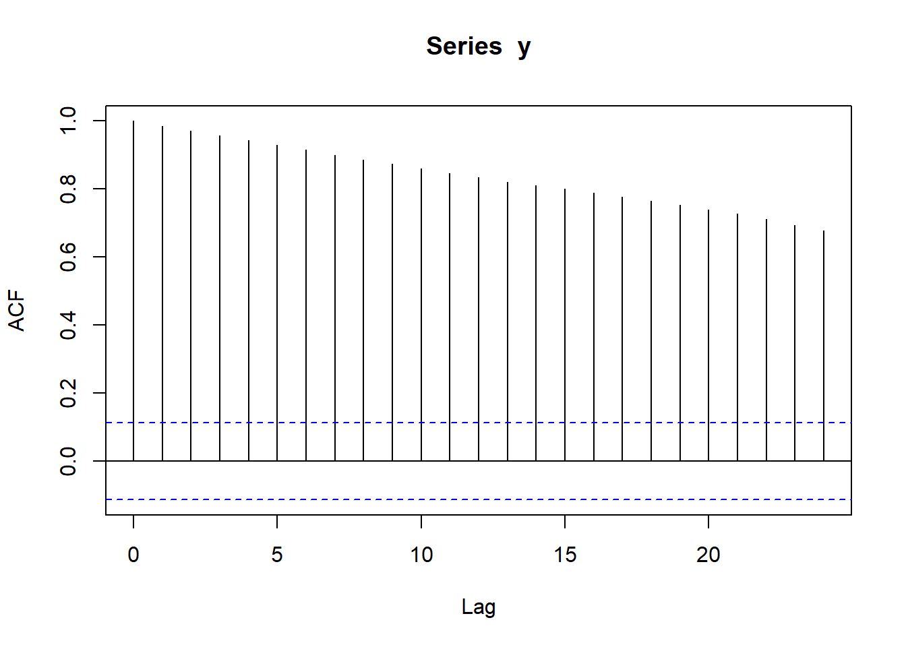
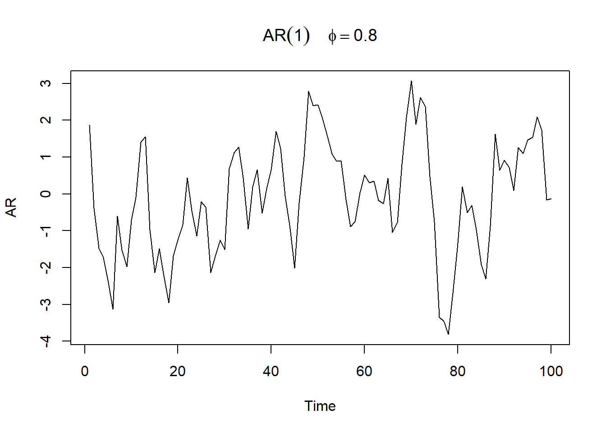
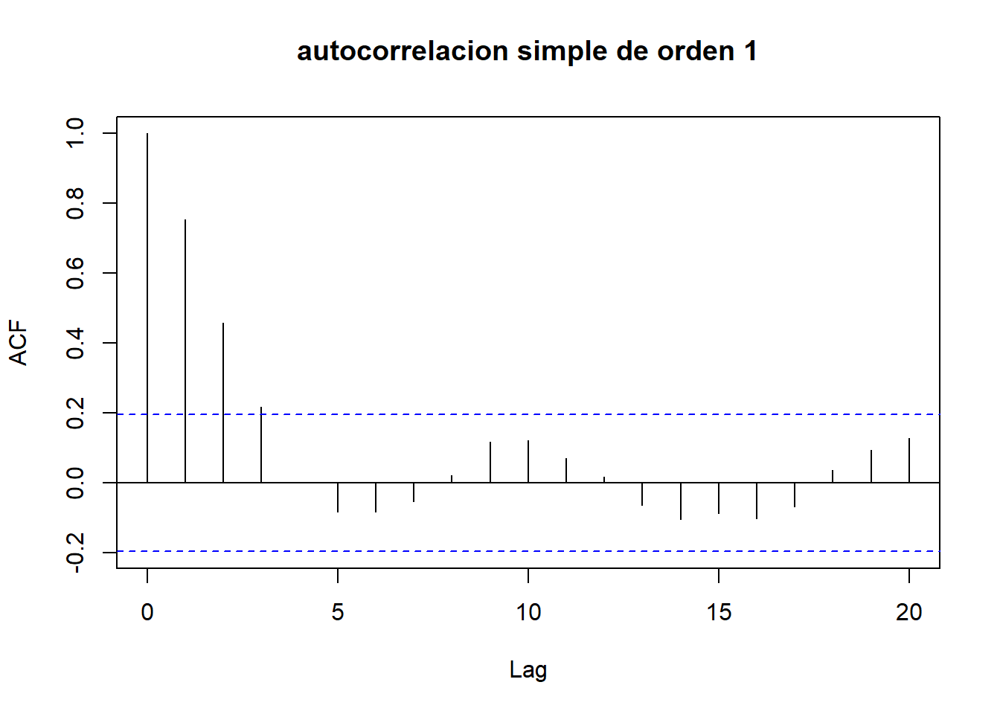
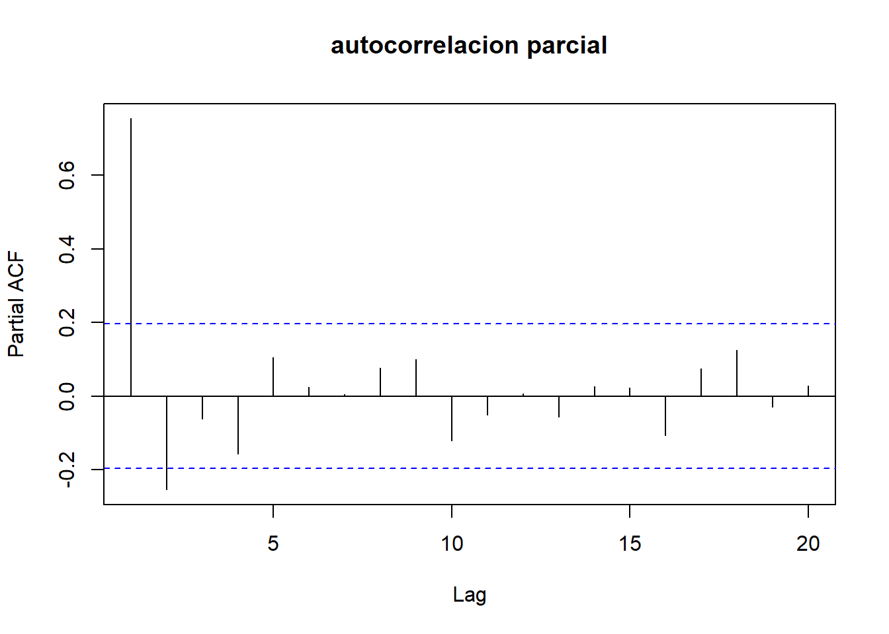
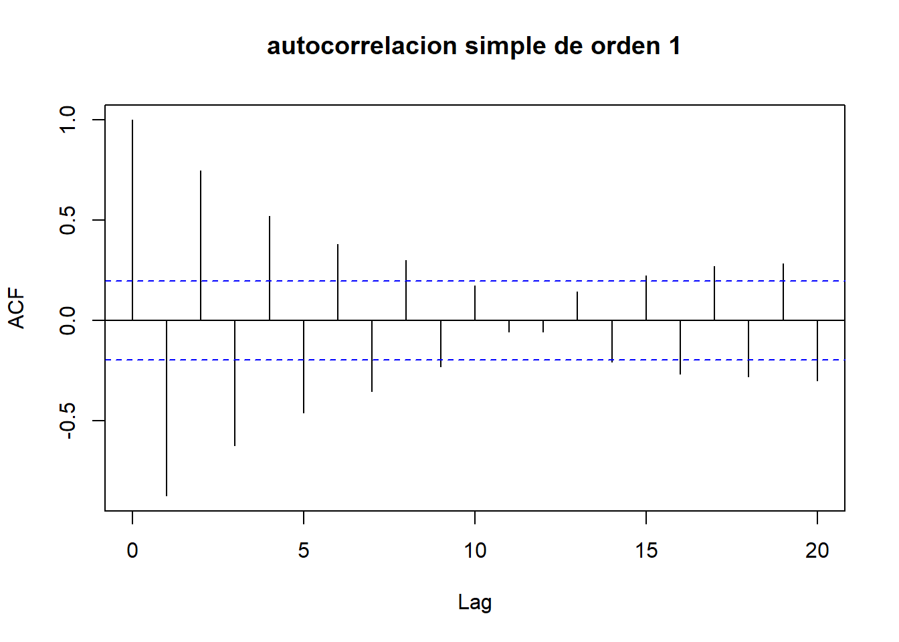
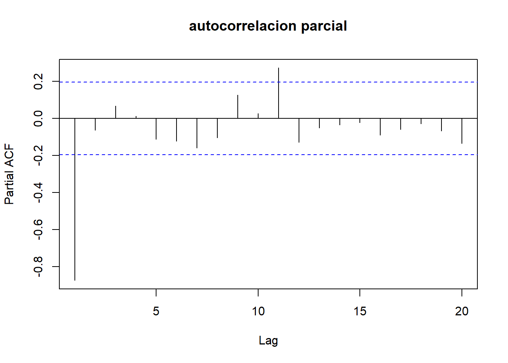
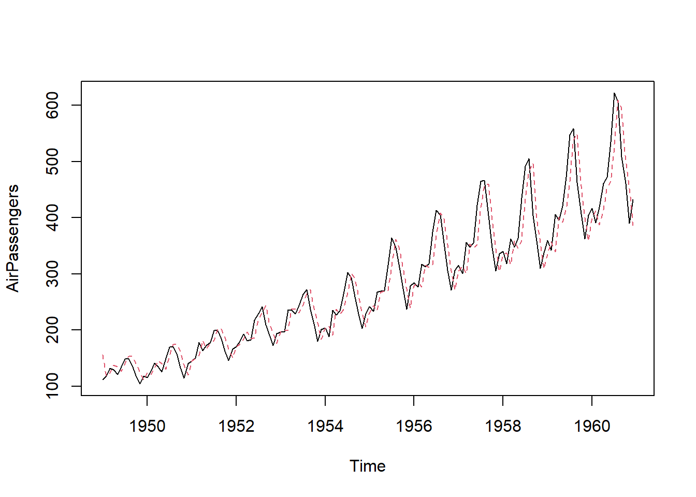

ts(data = NA, start = 1, end = numeric(), frequency = 1)6 Series temporales
6.1 Introducción
El estudio de las series temporales es una rama fundamental en diversas disciplinas como la economía, la meteorología, la ingeniería, la medicina y muchas otras, ya que permite comprender la evolución y la variabilidad de una secuencia de observaciones registradas a lo largo del tiempo.
La identificación de tendencias, patrones cíclicos y comportamientos estacionales en series temporales proporciona valiosa información para construir modelos predictivos que ayuden en la toma de decisiones, la planificación estratégica y la anticipación de eventos futuros (véase Jonathan D. Cryer 2008) y (véase Peña 2010).
6.1.1 ¿Qué es una serie temporal?
Una serie temporal es una sucesión de observaciones de una variable realizadas a intervalos regulares de tiempo.
El estudio de series temporales tiene por objeto analizar la evolución de una variable a través del tiempo.
La diferencia esencial con los análisis temporales es que las observaciones sucesivas no son independientes entre sí, y el análisis debe llevarse a cabo teniendo en cuenta el orden temporal de las observaciones. Por lo tanto, es muy importante conocer la periodicidad de los datos de las series que se están analizando.
La periodicidad puede ser:
Anual: Se toma un dato cada año.
Mensual: Se toma un dato cada mes.
Semanal: Se toma un dato cada semana.
Diaria: Se toma un dato cada día.
Por supuesto, existen muchos más tipos de periodicidad, como semestral o trimestral. El tipo de periodicidad va a ser algo importante en el análisis de la serie.
Ejemplos de series temporales
Serie del IPC en España. Esta serie puede ser anual o mensual.
Serie de Temperaturas en Mallorca. Esta serie suele ser mensual. Si fuera anual perderíamos mucha información, pues un invierno extremadamente frío puede compensarse con un verano muy cálido, de modo que la temperatura media del año sea templada.
Serie de ventas de una empresa. Este tipo de series puede ser anual, mensual o semanal.
Demanda de energía eléctrica. Esta serie suele obtenerse con periodicidad horaria.
Series de cotizaciones de bolsa. Este tipo de series se obtienen con la periodicidad que se quiera.
6.1.2 ¿Cómo crear una serie de tiempo en R?
En R ts es la función genérica para que los datos tengan forma de serie temporal. Su sintaxis es la siguiente:
donde:
data: Vector, “data frame” o matriz de datos.
start: Referencia de la primera observacion, es un vector con dos valores numéricos, el primero relativo al año y el segundo relativo al trimestre y mes de inicio (1 para el primer trimestre y 1 para enero en series de datos mensuales).
end: Referencia de la ultima observación.
frequency: Número de observaciones por año (4 en series trimestrales, 12 en series mensuales).
Un ejemplo de elaboración de un objeto “ts” es el siguiente:
ts(1:10, frequency = 4, start = c(1959, 2)) Qtr1 Qtr2 Qtr3 Qtr4
1959 1 2 3
1960 4 5 6 7
1961 8 9 10 Para importar datos a R, usa la función ts de la siguiente manera. El inputData usado aquí es idealmente un vector numérico de clase “numeric” or “integer”.
ts(inputData, frequency = 4, start = c(1959, 2)) # datos trimestrales
ts(1:10, frequency = 12, start = 1990) # datos mensuales
ts(inputData, start=c(2009), end=c(2014), frequency=1) # datos anualesEjemplo
Consideremos el gasto mensual por persona (en €) de los turistas con destino principal las Islas Baleares por país de residencia en el período junio 2017 a junio 2019. Fuente: IBESTAT.
gastos=read.table("datos/gastos_diarios_IB.txt",header=TRUE)
colnames(gastos) <- c('Fecha', 'Uk','Alemania', 'Suiza')
head(gastos,12) Fecha Uk Alemania Suiza
1 2017-06 563.52 748.37 89.51
2 2017-07 734.13 751.15 143.11
3 2017-08 702.46 785.59 70.78
4 2017-09 546.31 703.69 36.39
5 2017-10 301.46 561.62 60.01
6 2017-11 19.80 86.72 10.24
7 2017-12 17.55 46.23 NA
8 2018-01 16.70 51.89 NA
9 2018-02 14.80 77.56 NA
10 2018-03 50.43 219.53 13.35
11 2018-04 165.01 363.07 37.12
12 2018-05 414.05 578.02 57.94gastos.ts <- ts(gastos[-1], start = c(2017,6), frequency = 12)
head(gastos.ts) Uk Alemania Suiza
[1,] 563.52 748.37 89.51
[2,] 734.13 751.15 143.11
[3,] 702.46 785.59 70.78
[4,] 546.31 703.69 36.39
[5,] 301.46 561.62 60.01
[6,] 19.80 86.72 10.246.2 Series temporales y procesos estocásticos
Los fenómenos dinámicos que observamos mediante series temporales pueden considerarse como una realización de un proceso aleatorio o estocástico.
Un proceso estocástico (o aleatorio) es un conjunto de variables aleatorias \(\{X_t\}\) donde el índice \(t\) toma valores en un cierto conjunto \(C\). En el caso de las series temporales, este conjunto es ordenado y corresponde a los instantes temporales (días, meses, años, etc.).
Para cada valor \(t\) del conjunto \(C\), la variable aleatoria, \(X_t\), toma un valor y, el conjunto de los valores observados en distintos instantes forman una serie temporal.
{kind=link}
Por tanto, una manera más formal de definir una serie temporal es como una sucesión de observaciones de una variable tomadas en varios instantes de tiempo. Estas observaciones provienen de una distribución que puede ser diferente en cada instante del tiempo.
{kind=link}
Dependiendo de los valores que toma la serie:
Tiempo continuo: cuando el valor de la variable puede cambiar en cualquier momento (ej: velocidad del viento).
Tiempo discreto: cuando el valor de la variable puede cambiar en una serie de momentos determinados del tiempo.
Valores continuos: cada variable puede tomar cualquier valor comprendido en un rango (ej: temperatura).
Valores discretos: cada variable sólo puede tomar determinados valores discretos. (ej: activos cuyos precios oscilan de céntimos de € en céntimos de €).
Ejemplo:
Consideremos un proceso estocástico que se conoce como “paseo aleatorio (ramdom walk)”, definido de la siguiente forma: \[x_t=\sum_{j=0}^t a_j,\] donde \(a_j \mathop {\sim}\limits^{iid} N(0, \sigma)\) se conoce como ruido blanco Gaussiano.
Ejercicio: Dibujad con R, tres trayectorias de tamaño 300 de un paseo aleatorio con \(\sigma^2= 1\). Agregad una leyenda al gráfico y las etiquetas de los ejes. Entregad el fichero y su compilación en Aula Digital.
Un proceso estocástico queda caracterizado por el conjunto de todas las distribuciones finito-dimensionales.
La distribución n-dimensional de un proceso: Es la función de distribución de un conjunto de \(n\) variables del proceso \((X_1,\ldots, X_n)\), es decir, \[F(x_1,\ldots, x_n) = P(x_1 \leq x_1,\ldots, X_n ≤ x_n), \; \; n \in N \]
No somos capaces de tratar cualquier tipo de serie temporal, ya que en cada instante tenemos una variable con distinta distribución de la que sólo observamos un dato.
Para un proceso de tamaño \(T\), habría que estimar \(T\)-medias, \(T\)-varianzas, y \(T(T-1)/2\)-autocovarianzas. No disponemos de información suficiente.
Necesitamos imponer condiciones a la serie
Un proceso estocástico \((Y_t)_{t\in Z}\) es:
Estable en media: si \(\mu_t=\mu=cte\)
Estable en varianza: si \(\sigma^2_t=\sigma^2_y=cte\)
`Estable en autocovarianza: si \(\gamma_{t_1,t_1+h}=\gamma_{t_2,t_2+h}=\gamma_h\) para cualquier par de instantes \(t_1,t_2 \in Z\) y cualquier \(h \in Z\).
Estacionario en sentido débil: si es estable en media y en autocovarianza.
Estacionario en sentido estricto: si las distribuciones marginales de todas las variables son idénticas y además la distribución finito-dimensional de cualquier conjunto de variables sólo depende de los retardos. Es decir, si \[F_{t_1,\ldots,t_k}(y_1,\ldots,y_k)=F_{t_1+h,\ldots,t_k+h}(y_1,\ldots,y_k)\] para cualquier \(k \in N\), \(t_1,\ldots,t_k\), \(h \in Z\), y \(y_1,\ldots,y_k \in R\), donde \(F_{t_1,\ldots,t_k}\) denota la distribución conjunta de \(Y_{t_1},\ldots, Y_{t_k}\).
6.2.1 Ejemplos para clasificar

6.3 Descripción de series temporales
Una vez que has leído una serie de tiempo en R, el siguiente paso suele ser hacer un gráfico que muestre la evolución de la serie en el tiempo. Esto se puede hacer con la función plot.ts de R.
plot.ts(gastos.ts)Pero, en el caso en que tenemos varias series tomadas en el mismo instante de tiempo, podemos utilizar las siguientes instrucciones para visualizar mejor.
plot(gastos.ts, plot.type="single",
col = 1:ncol(gastos.ts), ylim=c(0,1000),
xlab="Fecha",
ylab="Gasto mensual por persona en €")
legend("topright", colnames(gastos.ts), col=1:ncol(gastos.ts), lty=1, cex=.65)
Si queremos ubicar dónde se producen los ciclos (movimientos de carácter periódico), podemos utilizar un gráfico de cajas y bigotes como el siguiente:
Otras ideas para visualizar series temporales:
Además de identificar los ciclos, cuando visualizamos una(s) serie(s) temporal(es) se suele prestar atención a las siguientes características:
- Tendencia: Se refiere a si la serie tiende a crecer o decrecer a largo plazo. Por ejemplo:
data(co2)
plot.ts(co2)
Cuando una serie permanece más o menos constante, oscilando en torno a un valor, decimos que la serie no tiene tendencia.
{kind=link}
- Variabilildad: Decimos que una serie es Homocedástica, si su variabilidad se mantiene constante a lo largo de la serie. Cuando la variabilidad de la serie aumenta o disminuye a lo largo del tiempo, decimos que la serie es Heterocedástica. La siguiente figura muestra una serie heterocedástica en la que la varianza va aumentando con el tiempo.
{kind=link}
Una serie puede tener tendencia y ser heterocedástica
{kind=link}
- Estacionalidad: Corresponde a aquellos comportamientos de tipo regular y repetitivo que se dan a lo largo de un período de tiempo, generalmente igual o inferior a un año, y que son producidos por factores tales como las variaciones climatológicas, las vacaciones, las fiestas, etc.
No confundas estacionalidad con fluctuación cíclica, que refleja los movimientos de carácter periódico, pero no necesariamente regulares, a medio plazo en torno a la tendencia.
Veamos si puedes identificar el tipo de comportamiento que presenta la siguiente serie
Hasta ahora hemos descrito el aspecto de la serie. Sin embargo, cuando se quiere analizar la serie es necesario identificar la estructura que la genera, es decir cómo influyen las observaciones del pasado en las observaciones del futuro.
6.3.1 Función de autocorrelación simple
La función de autocovarianza de un proceso estocástico \((Y_t)\) es una función de \(t\) que proporciona las covarianzas entre las variables del proceso en cada par de instantes: \[\gamma_{t_1,t_2}=Cov(Y_{t_1},Y_{t_2})=E[(Y_{t_1}-\mu_{t_1})(Y_{t_2}-\mu_{t_2})], \, \, t_1,t_2 \in I\]
La función de autocorrelación de un proceso estocástico \((Y_t)\) es una función de dos instantes de tiempo que describe las correlaciones entre las variables en un par de instantes \(t_1,t_2 \in I:\)\(\rho_{t_1,t_2}=Cor(Y_{t_1},Y_{t_2})=\frac{\gamma_{t_1,t_2}}{\sigma_{t_1}\sigma_{t_2}}, \; \; t_1,t_2 \in I\)$
La función de autocorrelación simple es una serie que proporciona la estructura de dependencia lineal de la misma.
Si los valores observados de la serie son: \(y_1,y_2,\ldots,y_{t-2},y_{t-1},y_{t}\). Entonces, \(y_{t+1}\) representa el valor de la serie para próximo periodo, es decir un valor futuro.
Luego, la función de autocorrelación proporciona el coeficiente de correlación entre las observaciones separadas un número determinado de periodos. Así la FAS (ACF en R), va a ser una sucesión de números:
\(\rho_1\) indica cómo influye una observación sobre la siguiente: \(y_i \rightarrow y_{i+1}\).
\(\rho_2\) indica cómo influye una observación sobre la que está dos periodos en adelante: \(y_i \rightarrow y_{i+2}\).
\(\rho_3\) indica cómo influye una observación sobre la que está tres periodos en adelante: \(y_i \rightarrow y_{i+3}\).
Y así sucesivamente
Los coeficientes de la FAS, \(\rho_1, \cdots, \rho_k,\cdots\) están acotados entre \([-1,1]\). Cuando un \(\rho_i\) vale cero, quiere decir que no existe efecto entre una observación y la \(i\) posiciones posteriores.
Si \(\rho_i\) es próximo a 1 indica que hay mucha relación entre una observación y la \(i\) posiciones posteriores, y que esa relación es positiva.
Si \(\rho_i\) es próximo a -1 indica que hay mucha relación entre una observación y la \(i\) posiciones posteriores, y que esa relación es negativa.
La FAS proporciona cómo una observación influye sobre las posteriores.
Ejemplo:
Serie del consumo mensual de gasolina en España 1/1966 - 8/1977

En el gráfico de la FAS anterior (ACF) se observa que los coeficientes (o barras) son significativos para retardos 1,2,3 y luego esto se repite para 11,12,13.
Las bandas horizontales que se observan proporcionan los límites para considerar significativo un retardo.
Pero, la FAS tiene un problema, y es que si por ejemplo \(\rho_1\) es distinto de cero, entonces: \[y_1 \rightarrow y_2 \rightarrow \cdots \rightarrow y_{t-1} \rightarrow y_{t} \rightarrow y_{t+1} \cdots \] es decir existe una cadena de influencia separada por un retardo. Pero si \(y_1 \rightarrow y_2\) y \(y_2 \rightarrow y_3\), entonces \(y_1 \rightarrow y_3\).
Por tanto, la ACF en general, si \(\rho_1\) es distinto de cero, encontrará que \(\rho_2, \rho_3, \cdots\) serán distintos de cero.
Pero, es necesario distinguir la cadena de influencia general, a través de \(\rho_1\) y las cadenas de influencia directa. Es decir cómo influye \(y_1\) sobre \(y_3\) directamente, es decir SIN PASAR A TRAVÉS DE \(y_2\).
6.3.2 Función de autocorrelación parcial
La Función de autocorrelación parcial, que en R es la función PACF proporciona la relación directa que existe entre observaciones separadas por \(k\) retardos.
Esta es una información muy valiosa sobre la estructura de la serie, ya que elimina el problema que presentaba la función de autocorrelación simple.
Ejemplo:
y=cumsum(rnorm(300,0,1))
plot.ts(y)
acf(y)
pacf(y)6.4 Serie estacionaria
En general, diremos que una serie es estacionaria cuando cumple las siguientes características:
No tiene tendencia
Es homocedástica.
No tiene ciclos estacionales
La estructura de dependencia se mantiene constante, es decir si una observación influye sobre la posterior, ésto ocurre SIEMPRE. Esta condición es importante para modelizar la serie, pues si el fenómeno que genera la serie cambia, es imposible que podamos prever la evolución de la serie.
La influencia de las observaciones sobre las posteriores decrece con el tiempo.
6.4.1 Transformaciones para conseguir estacionariedad
Cuando la serie no les estacionaria, es preciso transformarla.
Para eliminar la tendencia se toman una o varias diferencias en la serie. Una serie se diferencia restando a cada observación la observación anterior: \[w_t= y_t - y_{t-1}\]
Evidentemente la serie diferenciada \(w\) tiene una observación menos que la serie original, ya que la primera observación se pierde.
Si el gráfico de una serie muestra tendencia, se diferencia la serie y se comprueba si ha perdido la tendencia. En caso de que no la haya perdido se diferencia una segunda vez. Es muy raro necesitar más de una o dos diferencias para eliminar la tendencia de una serie.
Normalmente se utiliza la nomenclatura \(\Delta y_t= w_t\) para representar la serie con una diferencia.
Ejemplo:
gas.ts = ts(gas, start = c(1966,1), frequency = 12)
par(mfrow=c(1,2))
plot(gas.ts)
acf(gas.ts)En la ACF se observa una pauta que aparece cuando la serie tiene tendencia y por tanto no es estacionaria: las barras disminuyen muy lentamente.
w = diff(x)
par(mfrow=c(1,2))
plot.ts(w)
acf(w)
La serie ya no tiene tendencia, y su ACF decrece rápidamente.
Estabilización de la varianza:
Para estabilizar la variabilidad se suelen tomar logaritmos antes de aplicar diferencias en la serie
Posteriormente, cuando vayamos a hacer la predicción de la serie habrá que deshacer las diferencias y aplicando antilogaritmos según convenga.
Eliminar una tendencia no constante
Ejemplo: Si tenemos una serie mensual, podemos usar una media móvil de 12 meses: \[\hat{\mu_t}=\frac{z_{t-5}+ \cdots + z_{t+5}+ z_{t+6}}{12},\]
Aplicando este método se obtiene una estimación del nivel de la serie en los instantes \(t=6, \ldots, T-6\).
Para obtener los valores del nivel en los extremos se ajusta una recta a los últimos valores y de esta manera se completa la serie de niveles.
Una vez identificados los componentes determinísticos (tendencia y estacionalidad) y después de haberlos eliminado, persisten unos valores que son aleatorios.
Se pretende estudiar qué tipo de comportamiento aleatorio presentan estos residuos, utilizando algún tipo de modelo probabilístico que los describa.
6.5 Descomposición de una serie con R
Los métodos de descomposición tratan de separar la serie en subseries correspondientes a la tendencia, la estacionalidad y el ruido (componente aleatorio).
El primer paso a seguir a la hora de descomponer una serie es determinar cómo se combinan sus componentes.
Caso aditivo:
\[y_t= \mu_t + S_t + a_t\]
Caso multiplicativo:
El efecto estacional tiende a aumentar al aumentar la tendencia. \[y_t= \mu_t \times S_t \times a_t\]
6.5.1 Conductas de series temporales
{kind=link}
El procedimiento de construcción del modelo se realiza en tres etapas:
- Se estima el nivel de la serie observada con el modelo de tendencias deterministas que se fundamenta en modelar la dependencia temporal mediante las ideas de regresión.
Modelo:
Suponemos que la serie se puede descomponer de la siguiente forma: \[ y_t=\mu_t+a_t, \;\;\; t=1,\ldots,n\]
\(\mu_t=f(t,\mathbf{\beta})\) es el nivel de la serie depende del tiempo y de un vector de parámetros, \(\mathbf{\beta}\) que se estiman a partir de los datos.
\(a_t\), se denomina error aleatorio (o innovación) en el instante \(t\): recoge todos los demás efectos que actuan sobre la serie. Se supone que tiene una estructura estable a lo largo del tiempo: \(a_t \mathop {\sim}\limits^{iid} N(0, \sigma)\).
Habitualmente \(\mathbf{\beta}\) se obtiene utilizando el método de mínios cuadrados; es decir, resolviendo el problema: \[\min_{\mathbf{\beta}}\sum_{t=0}^n [y_t-f(t,\mathbf{\beta})]^2\]
Derivando la función \(f(t,\mathbf{\beta})=\sum_{t=0}^n [y_t-f(t,\mathbf{\beta})]^2\) respecto de los elementos de \(\mathbf{\beta}\) e igualando a cero, se obtienen las ecuaciones normales. El estimador mínimo cuadrático \(\hat{\mathbf{\beta}}\) es la solución a dichas ecuaciones.
La tendencia estimada es \(\hat{\mu_t}=f(t,\hat{\mathbf{\beta}})\), donde \(\hat{\mathbf{\beta}}\) es un estimador de \(\mathbf{\beta}\)
- A continuación se resta a la serie el nivel estimado para obtener una serie residual, que se denomina serie sin tendencia: \[E_t=y_t - \hat{\mu}_t=S_t + a_t\]
Una forma sencilla de estimar el efecto de las \(l\) distintas estaciones es:
Calcular la media de la serie sin tendencia: \(\bar{e}=n^{-1}\sum_{t=1}^{n}e_t\).
Calcular las medias de cada estación: \(\bar{e}_j=m^{-1}\sum_{k=1}^{m}e_{(k-1)l+j}, \;\; j=1,\ldots,l\).
Las componentes estacionales se estiman mediante: \[\widehat{s}_j=\overline{e}_j - \overline{e} \;\; j=1,\ldots,l\] y verifican que \(\sum_{j=1}^{l}\widehat{s}_j=0\)
Se obtiene la serie de residuos restando la serie sin tendencia el factor estacional de cada observación: \[ \hat{a}_t=E_t- \hat{S}_j\].
La predicción de la serie se realiza sumando las estimaciones de la tendencia y el factor estacional que corresponde a cada observación.
Si la variabilidad de los datos parece crecer con su nivel, podemos suponer un `Caso multiplicativo:.
Tomando logaritmos y renombrando las componentes se obtiene un modelo aditivo.
Ejemplo de descomposición de una serie:
datos=read.table("datos/precio_vestido.txt",header=TRUE)
# Ajustamos una tendencia lineal
x=1:length(datos$vestido)
tendencia=lm(datos$vestido ~ x)
# Restamos esta recta a la serie
e=datos$vestido-tendencia$fitted.values
e_ts=ts(e,start = c(1993,1),frequency = 12)
precio_vestido=ts(datos$vestido,start = c(1993,1),frequency = 12)par(mfrow=c(1,2))
ts.plot(precio_vestido,xlab="Tiempo",ylab="Precios vestidos")
ts.plot(e_ts,xlab="Tiempo",ylab="Serie sin tendencia")El comando cycle determina la unidad de tiempo a la que pertenece cada observación de la serie.
cycle(e_ts) Jan Feb Mar Apr May Jun Jul Aug Sep Oct Nov Dec
1993 1 2 3 4 5 6 7 8 9 10 11 12
1994 1 2 3 4 5 6 7 8 9 10 11 12
1995 1 2 3 4 5 6 7 8 9 10 11 12
1996 1 2 3 4 5 6 7 8 9 10 11 12
1997 1 2 3 4 5 6 7 8 9 10 11 12
1998 1 2 3 4 5 6 7 8 9 10 11 12
1999 1 2 3 4 5 6 7 8 9 10 11 12
2000 1 2 3 4 5 6 7 8 9 10 11 12
2001 1 2 3 4 5 6 7 8 9 10 11 12e_barra=mean(e_ts) #media de la serie sin tendencia
s=rep(0,12) #vector para los coeficientes estacionales
for(j in 1:12)
{
indice_j=seq(j,108,by=12)
s[j]=mean(e_ts[indice_j])-e_barra
}
#Calculamos los residuos
s_compl=rep(s,9)
a=e_ts-s_complplot.ts(a,xlab="Tiempo",ylab="Residuos")serie=ts(datos$vestido,start=c(1993,1),frequency = 12)
plot(decompose(serie))
Los valores estimados de los componentes estacionales, de tendencia e irregulares ahora se almacenan en variables: descompose(serie)$trend, descompose(serie)$seasonal y descompose(serie)$random.
Por ejemplo, podemos imprimir los valores estimados del componente estacional escribiendo:
decompose(serie)$seasonal Jan Feb Mar Apr May
1993 0.078689236 -0.092664931 -0.077039931 0.186501736 0.172960069
1994 0.078689236 -0.092664931 -0.077039931 0.186501736 0.172960069
1995 0.078689236 -0.092664931 -0.077039931 0.186501736 0.172960069
1996 0.078689236 -0.092664931 -0.077039931 0.186501736 0.172960069
1997 0.078689236 -0.092664931 -0.077039931 0.186501736 0.172960069
1998 0.078689236 -0.092664931 -0.077039931 0.186501736 0.172960069
1999 0.078689236 -0.092664931 -0.077039931 0.186501736 0.172960069
2000 0.078689236 -0.092664931 -0.077039931 0.186501736 0.172960069
2001 0.078689236 -0.092664931 -0.077039931 0.186501736 0.172960069
Jun Jul Aug Sep Oct
1993 0.008897569 -0.152560764 -0.325477431 -0.348394097 0.016710069
1994 0.008897569 -0.152560764 -0.325477431 -0.348394097 0.016710069
1995 0.008897569 -0.152560764 -0.325477431 -0.348394097 0.016710069
1996 0.008897569 -0.152560764 -0.325477431 -0.348394097 0.016710069
1997 0.008897569 -0.152560764 -0.325477431 -0.348394097 0.016710069
1998 0.008897569 -0.152560764 -0.325477431 -0.348394097 0.016710069
1999 0.008897569 -0.152560764 -0.325477431 -0.348394097 0.016710069
2000 0.008897569 -0.152560764 -0.325477431 -0.348394097 0.016710069
2001 0.008897569 -0.152560764 -0.325477431 -0.348394097 0.016710069
Nov Dec
1993 0.307855903 0.224522569
1994 0.307855903 0.224522569
1995 0.307855903 0.224522569
1996 0.307855903 0.224522569
1997 0.307855903 0.224522569
1998 0.307855903 0.224522569
1999 0.307855903 0.224522569
2000 0.307855903 0.224522569
2001 0.307855903 0.2245225696.6 Métodos armónicos
Un procedimiento alternativo para modelar la estacionalidad es representar la serie por una función armónica de su periodo \(l\).
Suponiendo que hemos eliminado la tendencia, si la huviese, consideremos series que tienen sólo componente estacional con cliclo único:red, es decir: \[y_t=S_t+a_t\]
La estacionalidad se puede capturar con una función seno o coseno, de la siguiente forma:
\[S_t=A \sin((2\pi/l)t+\theta),\] donde:
\(l\) es el periodo: número de observaciones hasta que la serie se repite.
\(A\) es la amplitud de la oscilación.
\(\theta\) es el ángulo de desfase con relación al comienzo del ciclo.
\(f=1/l\) se denomina frecuencia de la serie. Es la fracción de ciclo completado entre dos observaciones de la serie. Si \(l<1\), entonces \(f>1\) es el número de ciclos que pasan entre dos observaciones.
Ejemplo:
Una serie trimestral (\(l=4\)), la frecuencia es \(f=\frac{1}{4}=0.25\), indicando que entre dos observaciones, un trimestre, ha transcurrido 0.25 del periodo de la función o un 25% de un ciclo completo.
- \(w=2 \pi /l=2 \pi f\) es la frecuencia angular, o ángulo (en radianes) recorrido entre dos observaciones de la serie. Para \(l=365 \implies w=0.0172\).
Para capturar series de múltiples ciclos, usaremos la representación de Fourier: toda función periódica puede representarse como suma de funciones sinusoidales de distinta amplitud y frecuencia.
Dada una serie de longitud \(n\), se denomina periodos básicos o de Fourier a los que son fracciones exactas completas del tamaño muestral. Es decir, \[s_j=\frac{n}{j}, \; \; para \; \; j=1,2,\ldots n/2\]
Podemos obtener una representación general de una función periódica como suma de ondas asociadas a todas las frecuencias básicas, mediante: \[y_t=\mu+\displaystyle\sum_{j=1}^{n/2} A_j sen(w_j t) + \displaystyle\sum_{j=1}^{n/2} B_j cos(w_j t)\]
Para la ecuación anterior se usan los siguientes estimadores:
\(\hat{\mu}=\frac{1}{n} \displaystyle\sum_{t=1}^{T} y_t\)
\(\hat{A}= \frac{2}{n} \displaystyle\sum_{t=1}^{n} sen(w_jt) y_t\)
\(\hat{B}= \frac{2}{n} \displaystyle\sum_{t=1}^{n} cos(w_jt) y_t\)
Un boxplot nos podría ayudar a ver cómo se comporta la serie por ciclos.
6.7 En resumen…
Finalizamos la discusión sobre el análisis descriptivo de una serie temporal. En general, deberíamos revisar:
El gráfico de la serie.
Tendencia: si la hubiera, estimarla (modelo de tendencia deteminista, suavizado o tendencia evolutiva).
Estacionalidad: revisar el boxplot de la serie en función del ciclo y estimarla con los coeficientes estacionales (tal como lo hace R) o con funciones armónicas.
La predicción de la serie se realiza sumando las estimaciones de la tendencia y el factor estacional que corresponde a cada observación.
En el caso de que estemos trabajando con el caso aditivo: \(y_t=\mu_t + S_t +a_t\).
En caso que el efecto estacional tienda a aumentar con la tendencia, usamos el caso multiplicativo: \(z_t=\mu_t \times S_t \times a_t\)
6.8 Modelización univariante de series temporales
Ya hemos discutido cómo hacer el análisis descriptivo de una serie temporal para establecer si tiene tendencia, si es homocedástica o detectar con los gráficos de las funciones de autocorrelación (simple y parcial) si presenta estructura que depende del rezago de la serie.
Ahora, la idea es proponer modelos que introduzcan las correlaciones que se generan entre relaciones lineales rezagadas y que funcionan bien para series estacionarias:blue}.
La representación formal de los procesos aleatorios que generan series reales se puede realizar mediante modelos lineales de series temporales. Para ello se considera la serie temporal ha sido generada por un proceso estocástico, en este parte vamos a describir los posibles modelos teóricos que permiten explicar el comportamiento de la misma y, por tanto, el de su proceso generador.
Las estructuras estocásticas estacionarias lineales que se tratarán de asociar a una serie de datos se clasifican en tres tipos:
Modelos autoregresivos (AR) ,
Modelos de medias móviles (MA),
Modelos mixtos (ARMA)
Luego, los modelos mixtos se pueden extender a modelos para series no estacionarias:blue}, popularizados por Box y Jenkins (1970), que conducen a los:
- Modelos autorregresivos de media móvil integrados (ARIMA),
6.8.1 Procesos autorregresivos (AR)
Los procesos autorregresivos forman una familia de procesos tales que una observación depende de las observaciones anteriores. Se denominan procesos AR y se caracterizan por su orden.
Los modelos autorregresivos se basan en la idea de que el valor actual de la serie, \(y_t\), puede explicarse como una función de \(p\) valores anteriores, \(y_{t-1}, y_{t-2},\ldots, y_{t-p}\), donde \(p\) determina el número de pasos hacia el pasado necesarios para pronosticar el valor actual.
Por ejemplo, diremos que una serie \(y_t\) sigue un proceso autoregresivo de primer orden, o un AR(1):blue} si ha sido generado por: \[y_t=c+\phi y_{t-1}+a_t,\] donde \(c\) y \(-1<\phi < 1\) son constantes a determinar y \(a_t\) es un proceso de ruido blanco con varianza \(\sigma^2\).
La condición \(-1<\phi < 1\) es necesaria para que el proceso sea estacionario. Veamos por qué…
Supongamos que la serie comienza con \(y_0=h\), siendo \(h\) un valor cualquiera fijo. El siguiente valor será: \(y_1= c + \phi h + a_1\). Luego: \[ \begin{aligned} y_2&= c + \phi y_1 + a_2 \\ &= c(1+\phi)+\phi^2 h + \phi a_1+a_2 \end{aligned} \]
\[ \begin{aligned} y_3&= c + \phi y_2 + a_3 \\ &= c+\phi[c(1+\phi)+ \phi^2 h + \phi a_1+a_2]+a_3 \\ &=c(1+\phi+\phi^2)+\phi^3 h+\phi^2 a_1+\phi a_2+a_2 \end{aligned} \] \[\vdots\]
\[y_t= c \sum_{i=0}^{t-1} \phi^i + \phi^t h+ \sum_{i=0}^{t-1} \phi^i a_{t-i}\]
Luego, como \(E[a_t]=0\), nos queda: \(E[y_t]=c \sum_{i=0}^{t-1} \phi^i + \phi^t h\). Entonces, si \(|\phi|<1\), la serie geométrica \(\sum_{i=0}^{t-1} \phi^i\) converge a \(\frac{1}{1-\phi}\) y \(\phi^t\) converge a cero.
Con esta condición, depués de un periodo transcurrido inicial, cuando \(t \rightarrow \infty\), todas las variables \(y_t\) tendrán la misma esperanza, independientemente de las condiciones iniciales. \[E[y_t]=\frac{c}{1-\phi}\]
Observemos también que en este proceso la innovación \(a_t\) está incorrelada con los valores previos del proceso, \(y_{t-k}\) para \(k\) positivo. En efecto:
El valor \(y_{t-k}\) depende de los valores de las innovaciones hasta ese instante, \(a_1, \ldots, a_{t-k}\) pero no de sus valores futuros.
Como la innovación es un proceso de ruido blanco, sus valores futuros están incorrelados con los pasados y, por tanto, con los valores previos de proceso, \(y_{t-k}\)
ACF y PACF del proceso AR(1)
La función de autocorrelación simple y la parcial del proceso AR(1) tienen un aspecto muy característico.
Se puede demostrar que la ACF del proceso AR(1) tiene la expresión: \[\rho_k=\phi^k,\]
es decir que la barra \(k\), de la ACF es igual al coeficiente \(\phi\) elevado a la potencia \(k\). Esto implica que la ACF de un proceso AR(1) pueda tener el siguiente aspecto:
\(\phi\) positivo: La ACF será una función positiva y decreciente.
\(\phi\) negativo: La ACf será una función alternada, y tendrá barras pares positivas, y barras impares negativas.
En cuanto a la PACF, como indica la expresión AR(1), sólo existe influencia de primer orden, ya que si \(y_t\) depende de \(y_{t-2}\), es a través de z_{t-1}. Las PACF será por tanto:
\(\phi\) positivo: La PACF tendrá una única barra, la primera. Esta barra será positiva.
\(\phi\) negativo: La PACF tendrá una única barra y será negativa.
Ejemplos AR(1): blue;}
Vamos a simular dos AR(1), uno con \(\phi=0.8\)
AR<-arima.sim(list(order=c(1,0,0),ar=+.8),n=100)
plot(AR,main=(expression(AR(1)~~~~phi==0.8)))
acf(AR,main="autocorrelacion simple de orden 1")
pacf(AR,main="autocorrelacion parcial")
Simulamos un Ar(1) con \(\phi=-0.8\)
AR<-arima.sim(list(order=c(1,0,0),ar=-.8),n=100)
plot(AR,main=(expression(AR(1)~~~~phi==-0.8)))acf(AR,main="autocorrelacion simple de orden 1")
pacf(AR,main="autocorrelacion parcial")
Operador de retardo
El proceso AR(1) puede escribirse utilizando la notación de operador de retardo, \(B\), definido por: \[By_t=y_{t-1},\] El operador de retardo es:
Lineal: \(\;\;\; Bay_{t}=aBy_t=ay_{t-1}\)
Puede aplicarse sucesivamente: \(\;\;\; B^ky_t=\underbrace{B \cdots B}_{k-veces}y_t=y_{t-k}\)
Definiendo \(\tilde{y}_t= y_t-\mu\), como \(B \tilde{y}_t= \tilde{y}_{t-1}\), tenemos que: \[(1-\phi B)\tilde{y}_t=a_t\] Es decir, una serie centrada sigue un proceso AR(1) si al aplicarle el operador \((1-\phi B)\) se obtiene un proceso de ruido blanco. Alternativamente, \(1-\phi B =0 \implies B=1/\phi\). La condición de estacionaridad es entonces que la raíz del operador sea, en valor absoluto, mayor que uno.
La condición de estacionaridad es que este factor sea menor que la unidad en valor absoluto.
Alternativamente, podemos hablar de la raíz de la ecuación del operador:\(1-\phi B =0 \implies B=1/\phi\). La condición de estacionaridad es entonces que la raíz del operador sea, en valor absoluto, mayor que uno.
Características AR(1)
En resumen, las características de un AR(1)
- Esperanza:` Si \(|\phi|<1\), entonces \(E(y_t)=\mu=\frac{c}{1-\phi}\). Usando que \(c=\mu (1-\phi)\), el proceso puede escribirse en desviaciones a su media \(y_t-\mu=\phi(y_{t-1}-\mu)+a_t,\) y llamando \(\tilde{y}_t=y_t-\mu\), podemos escribir:
\[\tilde{y}_t=\phi \tilde{y}_{t-1}+a_t\]
Varianza: se obtiene calculando \(E(\tilde{y}_t^2)\), de donde \(\sigma_y^2=\frac{\sigma^2}{1-\phi^2}\)
Autocovarianzas y correlación: se puede demostrar que:
\(\gamma_k=\phi \gamma_{k-1}\), para \(k=1,2,\ldots\), donde \(\gamma_0=\sigma^2_y\)
\(\rho_k=\phi^k\)
6.8.2 AR(p)
Diremos que una serie temporal \(y_t\) estacionaria sigue un proceso autoregresivo de orden \(p\) si: \[\tilde{y}_t=\phi_1 \tilde{y}_{t-1}+ \cdots + \phi_p \tilde{y}_{t-p}+a_t,\] donde \(\tilde{y}_t=y_t-\mu\), siendo \(\mu\) la media del proceso \(y_t\) y \(a_t\) un proceso de ruido blanco.
Los parámetros se determinan a partir de las ecuaciones de Yule-Walker
\[\begin{matrix} \rho_1 & = & \phi_1+\phi_2 \rho_1 + \cdots + \phi_p \rho_{p-1} \\ \rho_2 & = & \phi_1 \rho_1 + \phi_2 + \cdots + \phi_p \rho_{p-2} \\ & \vdots & \\ \rho_p & = & \phi_1 \rho_{p-1} + \phi_2 \rho_{p-2} + \cdots + \phi_p \end{matrix}\]
Definiendo: \[\boldsymbol{\phi}' = [\phi_1, \ldots, \phi_p],\] \[\boldsymbol{\varrho}'=[\rho_1, \ldots, \rho_p],\]
\[R=\begin{bmatrix} {1}&{\rho_1}& \cdots & \rho_{p-1}\\ {\vdots}&{\vdots} & & \vdots \\ \rho_{p-1}& \rho_{p-2}& \cdots & 1 \end{bmatrix}\] El sistema se escribe de manera matricialmente: \[\boldsymbol{\varrho}=R \boldsymbol{\phi} \] y los parámetros se determinan a partir de las autocorrelaciones mediante:
\[\boldsymbol{\phi}=R^{-1}\boldsymbol{\varrho}\]
Ejemplo AR(p) en R:
set.seed(7122021)
x<-rnorm(500)
sim1<-arima.sim(list(ar=c(-0.5)),n=500,innov=x)
sim2<-arima.sim(list(ar=c(.5,-0.5)),n=500,innov=x)
sim3<-arima.sim(list(ar=c(.2,-.4,.6)),n=500,innov=x)
sim4<-arima.sim(list(ar=c(.5,.4,-.6,.4)),n=500,innov=x)par(mfrow=c(2,2));acf(sim1); acf(sim2); acf(sim3); acf(sim4)par(mfrow=c(2,2));pacf(sim1); pacf(sim2); pacf(sim3); pacf(sim4)¿De qué orden será este AR?
{kind=link}
6.8.3 Ejemplo práctico
Usaremos un conjunto de datos incorporado de R llamado AirPassengers. El conjunto de datos consta de el número total de pasajeros de aerolíneas internacionales, de 1949 a 1960 por meses.
data("AirPassengers")
is.ts(AirPassengers)[1] TRUEprint(AirPassengers) Jan Feb Mar Apr May Jun Jul Aug Sep Oct Nov Dec
1949 112 118 132 129 121 135 148 148 136 119 104 118
1950 115 126 141 135 125 149 170 170 158 133 114 140
1951 145 150 178 163 172 178 199 199 184 162 146 166
1952 171 180 193 181 183 218 230 242 209 191 172 194
1953 196 196 236 235 229 243 264 272 237 211 180 201
1954 204 188 235 227 234 264 302 293 259 229 203 229
1955 242 233 267 269 270 315 364 347 312 274 237 278
1956 284 277 317 313 318 374 413 405 355 306 271 306
1957 315 301 356 348 355 422 465 467 404 347 305 336
1958 340 318 362 348 363 435 491 505 404 359 310 337
1959 360 342 406 396 420 472 548 559 463 407 362 405
1960 417 391 419 461 472 535 622 606 508 461 390 432summary(AirPassengers) Min. 1st Qu. Median Mean 3rd Qu. Max.
104.0 180.0 265.5 280.3 360.5 622.0 start(AirPassengers)[1] 1949 1end(AirPassengers)[1] 1960 12time(AirPassengers) Jan Feb Mar Apr May Jun Jul Aug
1949 1949.000 1949.083 1949.167 1949.250 1949.333 1949.417 1949.500 1949.583
1950 1950.000 1950.083 1950.167 1950.250 1950.333 1950.417 1950.500 1950.583
1951 1951.000 1951.083 1951.167 1951.250 1951.333 1951.417 1951.500 1951.583
1952 1952.000 1952.083 1952.167 1952.250 1952.333 1952.417 1952.500 1952.583
1953 1953.000 1953.083 1953.167 1953.250 1953.333 1953.417 1953.500 1953.583
1954 1954.000 1954.083 1954.167 1954.250 1954.333 1954.417 1954.500 1954.583
1955 1955.000 1955.083 1955.167 1955.250 1955.333 1955.417 1955.500 1955.583
1956 1956.000 1956.083 1956.167 1956.250 1956.333 1956.417 1956.500 1956.583
1957 1957.000 1957.083 1957.167 1957.250 1957.333 1957.417 1957.500 1957.583
1958 1958.000 1958.083 1958.167 1958.250 1958.333 1958.417 1958.500 1958.583
1959 1959.000 1959.083 1959.167 1959.250 1959.333 1959.417 1959.500 1959.583
1960 1960.000 1960.083 1960.167 1960.250 1960.333 1960.417 1960.500 1960.583
Sep Oct Nov Dec
1949 1949.667 1949.750 1949.833 1949.917
1950 1950.667 1950.750 1950.833 1950.917
1951 1951.667 1951.750 1951.833 1951.917
1952 1952.667 1952.750 1952.833 1952.917
1953 1953.667 1953.750 1953.833 1953.917
1954 1954.667 1954.750 1954.833 1954.917
1955 1955.667 1955.750 1955.833 1955.917
1956 1956.667 1956.750 1956.833 1956.917
1957 1957.667 1957.750 1957.833 1957.917
1958 1958.667 1958.750 1958.833 1958.917
1959 1959.667 1959.750 1959.833 1959.917
1960 1960.667 1960.750 1960.833 1960.917frequency(AirPassengers)[1] 12ts.plot(AirPassengers, xlab="Año", ylab="Número de pasajeros", main="Totales mensuales de pasajeros \n de aerolíneas internacionales, 1949-1960")
# Ajustamos una recta de regresión para la tendencia
abline(reg=lm(AirPassengers~time(AirPassengers)),col="red")acf(AirPassengers)
pacf(AirPassengers)Vamos a ajustar un modelo AR
AR <- arima(AirPassengers, order = c(1,0,0))
print(AR)
Call:
arima(x = AirPassengers, order = c(1, 0, 0))
Coefficients:
ar1 intercept
0.9646 278.4649
s.e. 0.0214 67.1141
sigma^2 estimated as 1119: log likelihood = -711.09, aic = 1428.18#Dibujamos la serie y los valores ajustados
ts.plot(AirPassengers)
AR_fit <- AirPassengers - residuals(AR)
points(AR_fit, type = "l", col = 2, lty = 2)
library(tidyverse)
library(forecast)
AR %>% checkresiduals(test = F)Los residuos muestran que aún hay estructura por capturar, por tanto, si hacemos predicciones con este modelo:
#Usamos predict() para hacer una predicción de un paso adelante
predict_AR <- predict(AR)
#Obtenemos el valor de la predicción
predict_AR$pred[1][1] 426.5698#Si queremos más predicciones
predict(AR, n.ahead = 10)$pred
Jan Feb Mar Apr May Jun Jul Aug
1961 426.5698 421.3316 416.2787 411.4045 406.7027 402.1672 397.7921 393.5717
Sep Oct
1961 389.5006 385.5735
$se
Jan Feb Mar Apr May Jun Jul Aug
1961 33.44577 46.47055 55.92922 63.47710 69.77093 75.15550 79.84042 83.96535
Sep Oct
1961 87.62943 90.90636#Dibujamos la serie y agregamos los pronósticos más los intervalos de predicción al 95%
ts.plot(AirPassengers, xlim = c(1949, 1961))
AR_forecast <- predict(AR, n.ahead = 10)$pred
AR_forecast_se <- predict(AR, n.ahead = 10)$se
points(AR_forecast, type = "l", col = "red")
points(AR_forecast - 2*AR_forecast_se, type = "l", col = "green", lty = 2, pch=3)
points(AR_forecast + 2*AR_forecast_se, type = "l", col = "green", lty = 2, pch=3)Ajustamos un AR(2)
AR2<-arima(x=AirPassengers,order=c(2,0,0))
print(AR2)
Call:
arima(x = AirPassengers, order = c(2, 0, 0))
Coefficients:
ar1 ar2 intercept
1.2831 -0.3322 280.4696
s.e. 0.0786 0.0792 49.4423
sigma^2 estimated as 995.9: log likelihood = -702.82, aic = 1413.64AR2 %>% checkresiduals(test = F)ts.plot(AirPassengers, xlim = c(1949, 1961))
AR_forecast <- predict(AR2, n.ahead = 10)$pred
AR_forecast_se <- predict(AR2, n.ahead = 10)$se
points(AR_forecast, type = "l", col = "red")
points(AR_forecast - 2*AR_forecast_se, type = "l", col = "green", lty = 2, pch=3)
points(AR_forecast + 2*AR_forecast_se, type = "l", col = "green", lty = 2, pch=3)6.8.4 Modelos de Media Móvil (MA)
Los procesos de media móvil, MA, sirven para representan procesos de memoria muy corta. Son función de un número finito, y generalmente pequeño, de las innovaciones pasadas.
Por ejemplo, diremos que una serie \(y_t\) sigue un proceso de media móvil de primer orden, o un MA(1) si ha sido generado por: \[\tilde{y}_t=a_t - \theta a_{t-1},\] donde \(\tilde{y}_t=y_t-\mu\), siendo \(\mu\) la media del proceso y \(a_t\) es un proceso de ruido blanco con varianza \(\sigma^2\).
Observa que MA como parte de los modelos que estamos estudiando se refiere a retardos de errores, mientras que en el análisis descriptivo, se refiere a una técnica de suavizado de datos.
MA(1)
El proceso MA(1) puede escribirse con la notación de operadores: \[\tilde{z}_t=(1-\theta B)a_t\]
Este proceso es la suma de dos procesos estacionarios, y por tanto, siempre será estacionario. A pesar de lo anterior, en las aplicaciones de MA, supondremos que \(| \theta|<1\), de manera que la innovación pasada tenga menos peso que la presente.
Propiedades teóricas del MA(1) Se puede demostrar que:
- \(E(y_t)=\mu\).
- \(Var(y_t)=\sigma_y^2 (1+\theta^2)\).
- \(\rho_1=\frac{\theta}{1+\theta^2},\)
- \(\rho_k=0\) para \(k>1\), por tanto, el ACF tendrá únicamente un valor distinto de cero en el primer retardo.
Ejemplo MA(1)
Considera el siguiente proceso: \(y_t=10+0.7a_{t-1}+a_t,\) donde \(a_t \mathop {\sim}\limits^{iid} N(0, 1)\).
y_c=arima.sim(n=150,list(ma=0.7))
y=y_c+10
plot(y,type="l",main="")De acuerdo a los resultados teóricos, \(\rho_1=\frac{0.7}{1+(0.7)^2}=0.4698\) y \(\rho_k=0\) para todo retardo mayor a 1.
par(mfrow=c(1,2))
acf(y,lag.max = 10) # 10 retardos.
pacf(y,lag.max=10)6.8.5 Proceso MA(q)
Podemos escribir procesos cuyo valor actual depende no sólo de la última innovación, sino de las \(q\) últimas innovaciones: \[\tilde{y}_t=a_t- \theta_1 a_{t-1}- \theta_2 a_{t-2} - \ldots - \theta_q a_{t-q}\]
En notación de retardos: \[\tilde{y}_t=(1-\theta_1B-\theta_2B^2- \ldots \theta_qB^q) a_t\]
Propiedades del MA(q)`
En general, tiene autocorrelaciones diferentes de cero para los primeros \(q\) retardos, es decir, lags > \(q\) tienen \(\rho=0\).
\(\rho_k=\frac{\sum_{i=0}^q \theta_i \theta_{k+i}}{\sum_{i=0}^q \theta_i}\), para \(k=1,\ldots,q\). Además, \(\theta_0=-1\).
Ejemplo MA(q) en R
x<-rnorm(500)
sim1<-arima.sim(list(ma=c(1)),n=500,innov=x)
sim2<-arima.sim(list(ma=c(1,-1)),n=500,innov=x)
sim3<-arima.sim(list(ma=c(1,1,1)),n=500,innov=x)
sim4<-arima.sim(list(ma=c(1/4,1/4,1/4,1/4)),n=500,innov=x)par(mfrow=c(2,2));acf(sim1); acf(sim2); acf(sim3); acf(sim4)par(mfrow=c(2,2));pacf(sim1); pacf(sim2); pacf(sim3); pacf(sim4)Para identificar si una serie se puede representar a través de un proceso \(MA(q)\) podemos observar los gráficos de la función de autocorrelación simple (ACF) y la función de autocorrelación parcial (PACF).
La ACF presentará los primeros \(q\) coeficientes no nulos.
En la PACF, muchos coeficientes serán no mulos`. Presenta una mezcla de decrecimientos geométricos y sinusoidales hacia 0.
6.8.6 Ajuste de un MA a la serie AirPassengers
MA <- arima(AirPassengers, order = c(0,0,1))
print(MA)
Call:
arima(x = AirPassengers, order = c(0, 0, 1))
Coefficients:
ma1 intercept
0.9642 280.6464
s.e. 0.0214 10.5788
sigma^2 estimated as 4205: log likelihood = -806.43, aic = 1618.86#Diujamos la serie y los valores ajustados del MA
ts.plot(AirPassengers)
MA_fit <- AirPassengers - resid(MA)
points(MA_fit, type = "l", col = 2, lty = 2)Veamos qué tal sería la predicción
#Predicción un paso adelante
predict_MA <- predict(MA)
predict_MA$pred[1][1] 425.1049#Predicción 10 pasos adelante
predict(MA,n.ahead=10)$pred
Jan Feb Mar Apr May Jun Jul Aug
1961 425.1049 280.6464 280.6464 280.6464 280.6464 280.6464 280.6464 280.6464
Sep Oct
1961 280.6464 280.6464
$se
Jan Feb Mar Apr May Jun Jul Aug
1961 64.84895 90.08403 90.08403 90.08403 90.08403 90.08403 90.08403 90.08403
Sep Oct
1961 90.08403 90.08403##Dibujamos la serie y agregamos los pronósticos más los intervalos de predicción al 95%
ts.plot(AirPassengers, xlim = c(1949, 1961))
MA_forecasts <- predict(MA, n.ahead = 10)$pred
MA_forecast_se <- predict(MA, n.ahead = 10)$se
points(MA_forecasts, type = "l", col = "red")
points(MA_forecasts - 2*MA_forecast_se, type = "l", col = "green", lty = 2)
points(MA_forecasts + 2*MA_forecast_se, type = "l", col = "green", lty = 2)6.8.7 ¿Qué es mejor para modelizar la serie de AirPassengers un AR o un MA?
Para responder esta pregunta podemos utilizar o bien el criterio de información de Akaike (\(AIC\)) o el criterio de información bayesiano (\(BIC\)).
\[AIC=-2 \, log(\hat{\sigma}^2_e)+2\,k\]
\[BIC=-2 \,log(\hat{\sigma}^2_e)+k \, log(n),\] donde \(n\) es el número de observaciones, \(k\) es el número de parámetros, \(\hat{\sigma}^2_e\) es el estimador de la varianza del error.
La fórmula del primer término de \(BIC\) es la misma que la de \(AIC\), solo difiere en el segundo término. En el segundo término, se puede ver que el valor \(BIC\) está influenciado por el tamaño de muestra y parámetros en el modelo.
La idea principal es que estos indicadores penalizan los modelos con el número de parámetros estimados, para evitar el sobreajuste, y se prefieren valores más pequeños. Si todos los factores son iguales, un modelo que produce un \(AIC\) o \(BIC\) más bajo que otro modelo se considera un mejor ajuste.
AIC(AR)[1] 1428.179AIC(MA)[1] 1618.863BIC(AR)[1] 1437.089BIC(MA)[1] 1627.772Dado el valor más bajo de \(AIC\) y \(BIC\) en el modelo AR, deberíamos preferir a este que al MA para el análisis de series de tiempo de los datos de AirPassenger.
6.9 ARMA(p,q)
La ecuación para los procesos ARMA(p,q) es: \[(1-\phi_1B-\ldots - \phi_pB^p)\tilde{y}_t=(1-\theta_1B- \ldots \theta_qB^q)a_t,\] o en notación compacta: \[\Phi_p(B)\tilde{y}_t=\Theta_q(B)a_t\] La ACF y la PACF de los procesos ARMA es el resultado de la superposición de sus propiedades AR y MA. Por tanto, no es fácil identicar la estructura. Tanto la ACF como la PACF presentan muchos coeficientes no nulos. Sin embargo:
En la ACF los coeficientes presentan decrecimiento hacia 0 desde \(q\).
En la PACF los coeficientes presentan decrecimiento hacia 0 desde \(p\).
Ejemplo ARMA(p,q) en R
set.seed(1012)
x<-rnorm(200)
sim1<-arima.sim(list(ar=c(.1,.5,.2),ma=c(0.6,.4)),n=200,innov=x)
sim2<-arima.sim(list(ar=c(-0.4),ma=c(0.6,.1)),n=200,innov=x)par(mfrow=c(2,2));acf(sim1); pacf(sim1); acf(sim2); pacf(sim2)No resulta nada sencillo en la práctica identificar un proceso ARMA a través de sus acf y pacf, ya que es fácil confundir dichas funciones con las de otros procesos.
Se aconseja especificar y estimar inicialmente un modelo más sencillo, como por ejemplo un AR; posteriormente el análisis de los residuos obtenidos en dicha estimación pondrá de manifiesto la presencia de otras estructuras.
Si, por ejemplo, detectas en las funciones de autocorrelación simple y parcial de los residuos obtenidos una estructura de MA será necesario incorporar dicha estructura especificando un modelo ARMA, el cual sin duda tendrá una mayor capacidad explicativa.
¿Cómo harías esto en el ejemplo anterior?
ts.plot(sim1)pacf(sim1)x<-arima(sim1, order=c(3,0,0))
print(x)
Call:
arima(x = sim1, order = c(3, 0, 0))
Coefficients:
ar1 ar2 ar3 intercept
0.7661 0.3930 -0.2644 -0.2371
s.e. 0.0678 0.0833 0.0686 0.6617
sigma^2 estimated as 1.037: log likelihood = -288.34, aic = 586.69y<-residuals(x)
ts.plot(y)acf(y)
y %>% checkresiduals(test = F)6.10 Procesos Integrados
Los procesos no estacionarios más frecuentes son los Procesos Integrados, que tienen la propiedad de que al diferenciarlos se obtienen procesos estacionarios.
Considera el proceso \[w_t = \nabla y_t = y_t − y_{t−1}\]
Los valores de esta nueva serie oscilan alrededor de una media constante y parecen corresponder a una serie estacionaria. En este caso, diremos que la serie es integrada de orden 1.
Ahora, ajustamos un ARMA a \(w_t\) y luego integramos: \[y_t = w_t + y_{t−1}\]
A veces es necesario diferenciar más de 1 vez para obtener estacionaridad.
Por ejemplo:
\(w_t = \nabla y_t\) , no es estacionario. Entonces, \[z_t = \nabla w_t = w_t − w_{t−1} = y_t − \nabla y_{t−1} + y_{t−2} = \nabla^2 y_t\]
Si \(z_t\) es estacionario integramos dos veces para modelar a \(y_t\) .
Proceso integrado de orden \(h\):
En general, diremos que un procesos es integrado de orden \(h\geq 0\) y lo representamos por \(I(h)\) cuando, al diferenciarlo \(h\) veces se obtiene un proceso estacionario.
El modelo ARIMA(\(p\),\(d\),\(q\)) puede ser considerado como el modelo estocástico lineal general, del cual derivan el resto de procesos que hemos visto.
Así, si \(p=d=0\), estaremos ante un modelo ARIMA(0, 0, \(q\)) equivalente a un modelo MA(\(q\)). Si \(q=0\) tendríamos un modelo ARIMA(\(p\), \(d\), \(0\)) ó ARI(\(p\),\(d\)) (es decir, un modelo autorregresivo en el que se han tomado \(d\) diferencias para hacer estacionaria a la serie analizada).
6.10.1 Ejemplo demostrativo con R
Vamos a trabajar de nuevo con datos simulados.
set.seed(250)
ts=arima.sim(list(order = c(1,1,2),
ma=c(0.32,0.47),
ar=0.8), n = 50)+20A continuación, dibujamos la serie temporal original y sus acf y pacf.
m <- matrix(c(1, 3, 2, 3), ncol = 2)
nf <- layout(m)
plot.ts(ts)
acf(ts)
pacf(ts)La serie original muestra una clara no estacionariedad; el acf muestra una disminución lenta y el pacf indica un AR de orden uno.
Vamos a diferenciar la serie para ver si logramos eliminar la tencia.
par(mfrow=c(1,2))
y=diff(ts)
plot(y)
acf(y)Los datos de la primera diferencia parecen estacionarios. El ACF se corta después de algunos rezagos.
Dado que se necesitó una diferenciación para obtener la estacionariedad, aquí \(d\) = 1
El siguiente paso es proponer los valores de \(p\), el orden de la parte AR. Vemos que el PACF de la serie original se corta en uno y el ACF de la serie diferenciada se corta después del rezago 2. Así que proponemos tres modelos para los datos diferenciados:
ARIMA(1,1,0)
ARIMA(0,1,2)
ARIMA(1,1,2)
Ajustamos los tres modelos ARIMA con las primeras 40 observaciones y dejamos las últimas 10 para pronosticar
## Partición en training y test
train=ts[1:40]
test=ts[41:50]
## ajustamos los modelos
arimaModel_1=arima(train, order=c(1,1,0))
arimaModel_2=arima(train, order=c(0,1,2))
arimaModel_3=arima(train, order=c(1,1,2))
## revisamos los parámetros ajustados
print(arimaModel_1);print(arimaModel_2);print(arimaModel_3)
Call:
arima(x = train, order = c(1, 1, 0))
Coefficients:
ar1
0.8012
s.e. 0.0892
sigma^2 estimated as 1.311: log likelihood = -61.13, aic = 126.26
Call:
arima(x = train, order = c(0, 1, 2))
Coefficients:
ma1 ma2
0.7408 1.000
s.e. 0.2135 0.537
sigma^2 estimated as 0.9673: log likelihood = -57.78, aic = 121.57
Call:
arima(x = train, order = c(1, 1, 2))
Coefficients:
ar1 ma1 ma2
0.5585 0.4438 0.7238
s.e. 0.1581 0.1584 0.1305
sigma^2 estimated as 0.8554: log likelihood = -53.64, aic = 115.29Observa que el signo de los coeficientes estimados por R es consistente con la fórmula de la simulación del ARIMA. Observa las varianzas de los términos de error de cada modelo y el AIC, de acuerdo a estos, el mejor modelo es el 3.
Veamos las predicciones sobre las observaciones que no hemos utilizado para ajustar los parámetros
#Modelo 1
ts.plot(ts)
forecast1=predict(arimaModel_1, 10)$pred
forecast1_se=predict(arimaModel_1, 10)$se
points(forecast1, type = "l", col = "red")
points(forecast1 - 2*forecast1_se, type = "l", col = "green", lty = 2)
points(forecast1 + 2*forecast1_se, type = "l", col = "green", lty = 2)#Modelo 2
ts.plot(ts)
forecast2=predict(arimaModel_2, 10)$pred
forecast2_se=predict(arimaModel_2, 10)$se
points(forecast2, type = "l", col = "red")
points(forecast2 - 2*forecast2_se, type = "l", col = "green", lty = 2)
points(forecast2 + 2*forecast2_se, type = "l", col = "green", lty = 2)#Modelo 3
ts.plot(ts)
forecast3=predict(arimaModel_3, 10)$pred
forecast3_se=predict(arimaModel_3, 10)$se
points(forecast3, type = "l", col = "red")
points(forecast3 - 2*forecast3_se, type = "l", col = "green", lty = 2)
points(forecast3 + 2*forecast3_se, type = "l", col = "green", lty = 2)Vemos que el segundo modelo tiene una ejecución similar al tres, a pesar de no tener el mejor valor de probabilidad de AIC. Por tanto, necesitamos medidas de la precisión de las estimaciones:
accuracy(forecast2, test) ME RMSE MAE MPE MAPE
Test set 4.97575 7.150113 4.97575 14.39955 14.39955accuracy(forecast3, test) ME RMSE MAE MPE MAPE
Test set 5.38043 7.474219 5.38043 15.73739 15.73739Donde cada medida es:
ME error medio
RMSE error cuadrático medio
MAE error absoluto medio
MPE error porcentual medio
MAPE error porcentual absoluto medio
Depende de cada caso decidir, basándose en las medidas de precisión, si considera que el modelo es adecuado o no. Por ejemplo, el error porcentual medio de 14,4% no me parece grande, pero eso puede depender de cuáles son las series y cuánta previsibilidad podemos esperar de manera realista.
Pero cuidado! nos falta revisar los residuos !!!
arimaModel_2 %>% checkresiduals(test = F)arimaModel_3 %>% checkresiduals(test = F)Conclusión: Mejor es el modelo 3, tal como lo habíamos simulado ;-)
6.10.2 Ejemplo con datos reales
Vamos a analizar un fichero de datos que contiene la edad en que murieron los reyes sucesivos de Inglaterra comenzando con William el conquistador, en total son 42 reyes.
Según otra fuente consultada, wikipedia, William fue el sexto rey y murió en 1837 a los 71 años, sin embargo, el fichero indica 60 años.
Los datos se obtuvieron de un fichero publicado en el artículo “Interactive Data Anlaysis: A Practical Primer” de Don McNeil, publicado el 4 de mayo de 1977.
edad_muerte=ts(kings)
edad_muerteTime Series:
Start = 1
End = 42
Frequency = 1
[1] 60 43 67 50 56 42 50 65 68 43 65 34 47 34 49 41 13 35 53 56 16 43 69 59 48
[26] 59 86 55 68 51 33 49 67 77 81 67 71 81 68 70 77 56¿La serie es estacionaria?
plot.ts(edad_muerte, xlab= "Dinastía",
ylab="Edad muerte del Rey",
main="Longevidad de los Reyes Británicos
según la dinastía")Vamos a diferenciar la serie:
diff_o1 <- diff(edad_muerte, differences=1)
plot.ts(diff_o1)La serie temporal de las primeras diferencias parece ser estacionaria en la media y la varianza, por lo que un modelo ARIMA(\(p\),1,\(q\)) es probablemente apropiado para la serie temporal de la edad de la muerte de los reyes de Inglaterra.
Al tomar las series de tiempo de las primeras diferencias, hemos eliminado el componente de tendencia y nos quedamos con un componente irregular.
Ahora podemos examinar si hay correlaciones entre los términos sucesivos de este componente irregular. Si es así, esto podría ayudarnos a hacer un modelo predictivo para las edades de la muerte de los reyes.
par(mfrow=c(1,2))
acf(diff_o1, lag.max = 20) # si especificamos plot=FALSE podemos obtener los valores
pacf(diff_o1, lag.max = 20)Los modelos posibles son:
ARMA(3,0) es decir, un modelo autorregresivo de orden \(p = 3\), ya que el autocorrelograma parcial es cero después del retraso 3, y el autocorrelograma se reduce a cero (aunque quizás muy bruscamente para que este modelo sea apropiado).
ARMA(0,1) un modelo de media móvil de orden \(q = 1\), ya que el autocorrelograma es cero después del desfase 1 y el autocorrelograma parcial se reduce a cero.
ARMA(p,q) un modelo mixto con \(p\) y \(q\) mayores que 0, ya que el autocorrelograma y el correlograma parcial se reducen a cero (aunque el correlograma probablemente se reduce a cero abruptamente para que este modelo sea apropiado)
modelo1 = arima(diff_o1, order=c(3,0,0))
modelo2 = arima(diff_o1, order=c(0,0,1))
modelo3 = arima(diff_o1, order=c(3,0,1))
AIC(modelo1,modelo2,modelo3) df AIC
modelo1 5 348.5243
modelo2 3 345.8136
modelo3 6 350.5172BIC(modelo1,modelo2,modelo3) df BIC
modelo1 5 357.0922
modelo2 3 350.9543
modelo3 6 360.7987par(mfrow=c(1,2))
plot(modelo2$residuals)
qqnorm(modelo2$residuals)
qqline(modelo2$residuals,col="red")modelo2$coef ma1 intercept
-0.7462804 0.3881635 Un modelo de MA (promedio móvil) se usa generalmente para modelar una serie de tiempo que muestra dependencias a corto plazo entre observaciones sucesivas.
De manera intuitiva, tiene sentido que se pueda usar un modelo de MA para describir el componente irregular en las series de tiempo de la muerte de los reyes ingleses, ya que podríamos esperar que la edad de un rey inglés en particular tenga algún efecto en las edades de muerte del próximo rey o dos, pero no mucho efecto en las edades en la muerte de los reyes que reinarán mucho más tiempo después de eso.
Dado que un modelo ARMA(0,1) (con \(p = 0\), \(q = 1\)) se considera el mejor modelo candidato para la serie temporal de las primeras diferencias de las edades de muerte de los reyes ingleses, la serie temporal original del las edades de muerte se pueden modelar con un ARIMA(0,1,1).
Vamos a usar a función auto.arima() de la librería forecast para confirmar nuestra selección.
library(forecast)
auto.arima(edad_muerte)Series: edad_muerte
ARIMA(0,1,1)
Coefficients:
ma1
-0.7218
s.e. 0.1208
sigma^2 = 236.2: log likelihood = -170.06
AIC=344.13 AICc=344.44 BIC=347.56Podemos usar el modelo ARIMA para hacer pronósticos de valores futuros de la serie de tiempo, usando la función forecast.Arima() del paquete forecast.
Por ejemplo, para pronosticar las edades al morir de los próximos cinco reyes ingleses, escribimos:
pronostico=forecast(arima(edad_muerte, order=c(0,1,1)), h=5)
pronostico Point Forecast Lo 80 Hi 80 Lo 95 Hi 95
43 67.75063 48.29647 87.20479 37.99806 97.50319
44 67.75063 47.55748 87.94377 36.86788 98.63338
45 67.75063 46.84460 88.65665 35.77762 99.72363
46 67.75063 46.15524 89.34601 34.72333 100.77792
47 67.75063 45.48722 90.01404 33.70168 101.79958plot(pronostico)6.10.3 Ljung Box test
El test Ljung Box se utiliza para contrastar la ausencia de autocorrelación en una serie, hasta un retardo específico \(k\).
El test determina si los errores, luego de ajustar el modelo son independientes e idénticamente distribuidos (ruido blanco) o si existe alguna estructura más en ellos. En otras palabras, si las autocorrelaciones de los errores no son cero.
Un \(p\)-valor significativo (< 0.05) indica rechazar la hipótesis nula, es decir la serie presenta autocorrelación.
El estadístico del test para una serie de longitud \(n\) es: \[Q(m)=n(n+2)\sum_{j=1}^{m} \frac{r_j^2}{n-j},\] donde:
\(r_j\) son las autocorrelaciones muestrales
\(m\) es el tiempo de retardo.
Rechazamos \(H_0\) si \(Q > \chi_{1-\alpha,\nu}^2\), donde:
- \(\chi_{1-\alpha,\nu}^2\) es el cuantil de la distribución ji-cuadrado para el nivel de significancia \(\alpha\) y \(\nu\) los grados de libertad.
Cuando se aplica el test Ljung Box a los residuos de un modelo ARIMA, los grados de libertad \(\nu\) son \(m-p-q\), donde \(p\) y \(q\) son los parámetros del ARIMA(p,q) model. En R el test está implementaddo en la función Box.test.
Box.test(residuals(modelo2),lag=2)
Box-Pierce test
data: residuals(modelo2)
X-squared = 0.83577, df = 2, p-value = 0.65846.10.4 Procesos estacionales: SARIMAs
Otra causa de no estacionaridad es la estacionalidad.
Por ejemplo, en una serie mensual con estacionalidad anual, cada mes tiene una media distinta, con lo cual la media no es estable.
En muchos casos, un proceso estacional se convierte en estacionario al tomar un número \(D\) de diferencias estacionales.
Para detectar un comportamiento estacional podemos analizar las ACF y PACF de la serie.
Si al representar dichas funciones se aprecian valores muy altos, significativamente distintos de cero, para los retardos estacionales podremos concluir que la serie presenta un componente estacional y debemos exigir que el componente estacional se mantenga constante a lo largo del tiempo.
Así, si observamos que la ACF presenta un lento decaimiento en los valores correspondientes a los retardos estacionales y el valor del primer retardo estacional es próximo a uno tanto en ACF como PACF, es muy probable que el comportamiento estacional de la serie no presente un carácter estacionario, por lo que será necesario tomar diferencias de tipo estacional.
Los ARIMAs estacionales tienen las siguientes características:
Contienen una componente ARIMA(\(P\),\(D\),\(Q\)) que modeliza la dependencia estacional.
Contienen otra componente ARIMA(\(p\),\(d\),\(q\)) que modeliza la dependencia regular, que es la dependencia asociada a observaciones consecutivas.
El proceso diferenciado \(w_t=\nabla^D \nabla^d y_t\) es un proceso estacionario que sigue el modelo ARMA estacional.
Este proceso se denota como
\[\textbf{ARIMA}\quad\underbrace{(p,d,q)}_{parte \,\, regular} \times \underbrace{(P,D,Q,)}_{parte \,\,estacional}\]
Ejemplo de ajuste de un SARIMA
Consideremos los datos del fichero papel que corresponden a las ventas mensuales de papel correspondiente a 10 años.
papel=scan("datos/papel.txt")
plot(papel,ylab='Venta papel',xlab='Tiempo',type='o',pch=16)dpapel = diff(papel,1)
par(mfrow=c(2,1))
plot(dpapel,ylab='Valores',xlab='Tiempo',type='l',pch=16,main="Serie sin tendencia")
acf(dpapel,60,main="")par(mfrow=c(2,1))
d12dpapel = diff(dpapel,12)
plot(d12dpapel,ylab='Serie',xlab='Tiempo',type='l',pch=16,
main="Serie sin tendencia y desestacionalizada")
acf(d12dpapel,60,main="Ventas de papel desestacionalizada y diferenciada")pacf(d12dpapel,60,main="")La PACF muestra decaimiento exponencial mientras que el acf muestra un pico bastante significativo y aislado en el retardo 1, entonces debe tratarse de un MA(1). Además de este pico, sigue apareciendo en el retardo 12 de ambas autocorrelaciones, aún hay un remanente de estacionalidad, lo que sugiere agregar un MA(1) estacional.
a=c(0,1,1)
(modelo=arima(papel,a,seasonal=list(order=a,period=12)))
Call:
arima(x = papel, order = a, seasonal = list(order = a, period = 12))
Coefficients:
ma1 sma1
-0.8402 -0.6360
s.e. 0.0611 0.0929
sigma^2 estimated as 1809: log likelihood = -556.91, aic = 1119.83pronostico=forecast(modelo, h=20)
plot(pronostico)tsdiag(modelo)